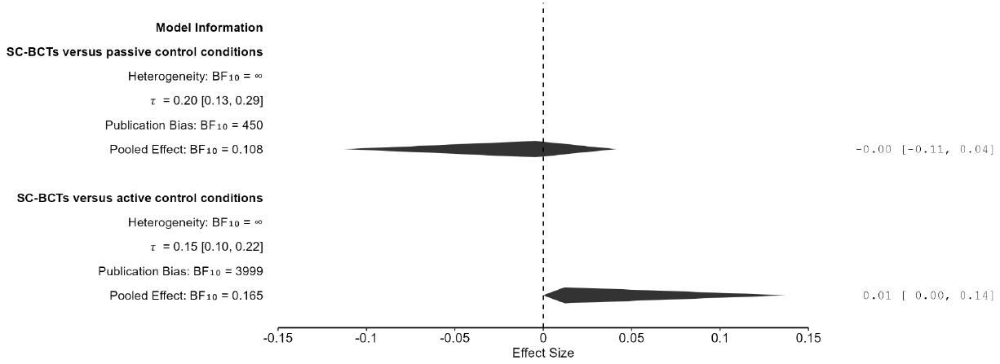

Abstract
Social comparison is increasingly used as a behaviour change technique (SC-BCT) yet its true efficacy remains unclear. To address this concern, Hoppen and colleagues performed a comprehensive meta-analysis of 79 randomized controlled trials involving over 1.3 million participants. Hoppen and colleagues “found evidence supporting the efficacy of SC-BCTs in shaping behaviour in the desired direction”. However, their own risk of bias assessment revealed that “most trials (k = 66; 84%) had some concern of bias regarding selection of the reported result(s) given that preregistrations and prespecified analysis protocols were rare” and they noted that “it remains unknown to what extent the present results are affected by publication bias”. In our re-analysis, we demonstrate that publication bias exaggerated the evidence in favor of SC-BCT to such a degree that once this bias is properly adjusted for, the effect disappears entirely. In fact, the data show moderate evidence against the presence of an effect.

Reference: Frantisek Bartos, Zuzana Irsova, Tomas Havranek, Eric-Jan Wagenmakers (2025), "Adjusting for Publication Bias Reveals Evidence Against Social Comparison As a Behaviour Change Technique Across the Behavioural Sciences," available at osf.io/preprints/psyarxiv/jtv5d_v1.
Headline result
Effect of social comparison as a behaviour change technique: corrected for publication bias, g = 0.00 against passive and 0.01 against active control conditions, with moderate evidence against any effect (short-term efficacy; before adjustment 0.17 and 0.23), based on 79 effect sizes from randomized controlled trials (Bartos et al. 2025).
How to cite
Frantisek Bartos, Zuzana Irsova, Tomas Havranek, Eric-Jan Wagenmakers (2025), "Adjusting for Publication Bias Reveals Evidence Against Social Comparison As a Behaviour Change Technique Across the Behavioural Sciences," available at osf.io/preprints/psyarxiv/jtv5d_v1.
BibTeX
@misc{bartos2025social,
author = {Frantisek Bartos and Zuzana Irsova and Tomas Havranek and Eric-Jan Wagenmakers},
title = {Adjusting for Publication Bias Reveals Evidence Against Social Comparison As a Behaviour Change Technique Across the Behavioural Sciences},
year = {2025},
doi = {10.31234/osf.io/jtv5d_v1},
}
The meta-analysis re-examined here
The paper re-analyses the data of Hoppen, Cuno, Nelson, Lemmel, Schlechter and Morina (2025), “Meta-analysis of randomized controlled trials examining social comparison as a behaviour change technique across the behavioural sciences”, Nature Human Behaviour, doi.org/10.1038/s41562-025-02209-2. The data and code offered here are copied from the OSF project of the re-analysis, which also holds two JASP files (72 MB and 37 MB) that are not copied to this site.